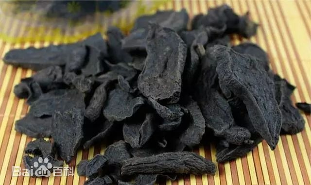
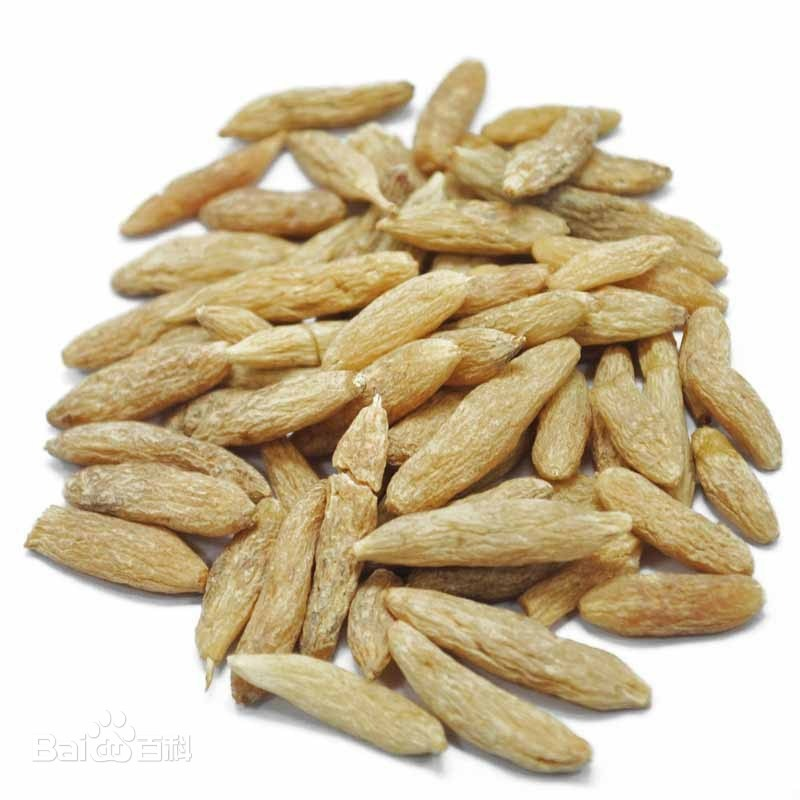
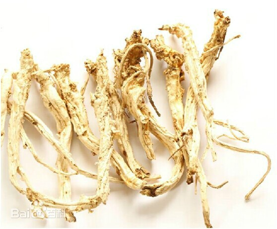
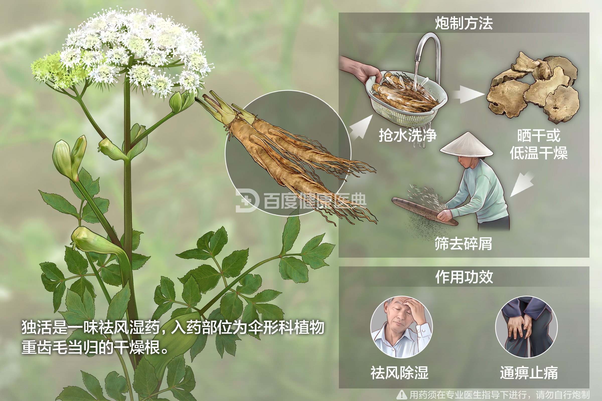
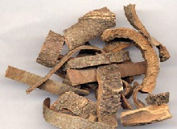
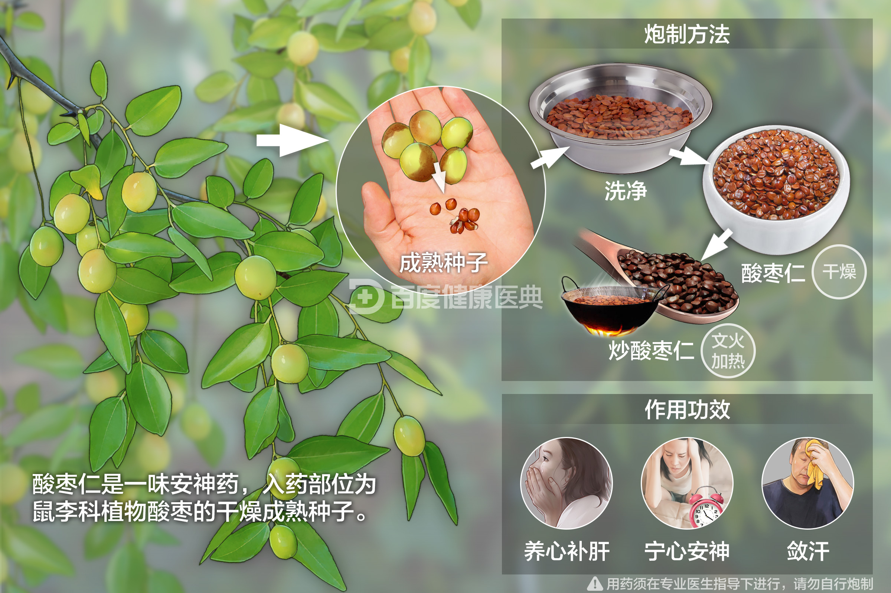
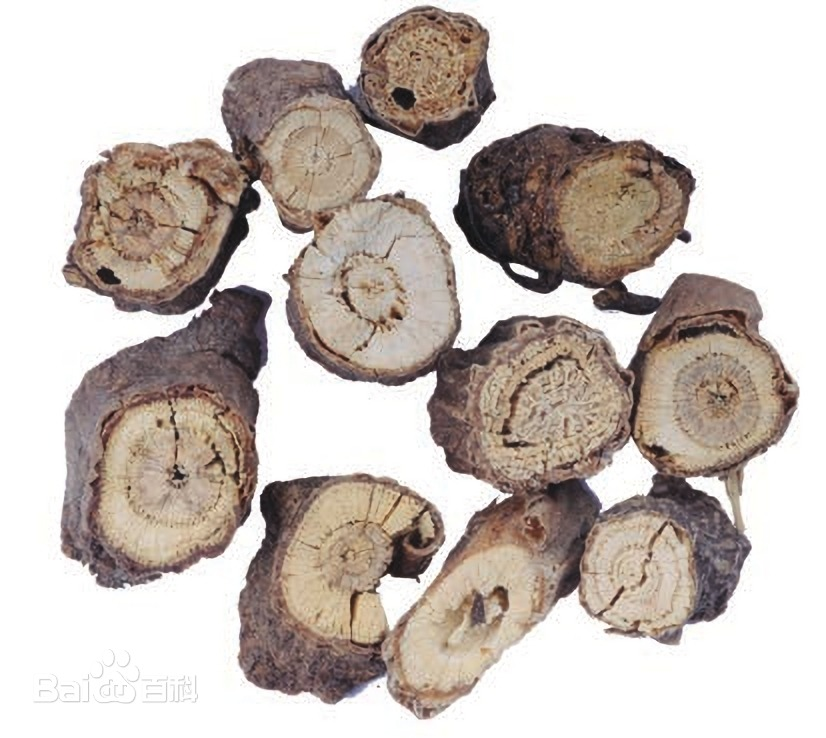
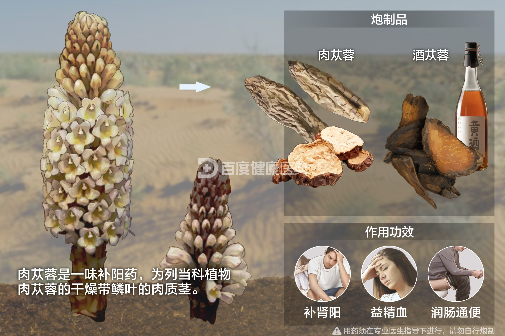
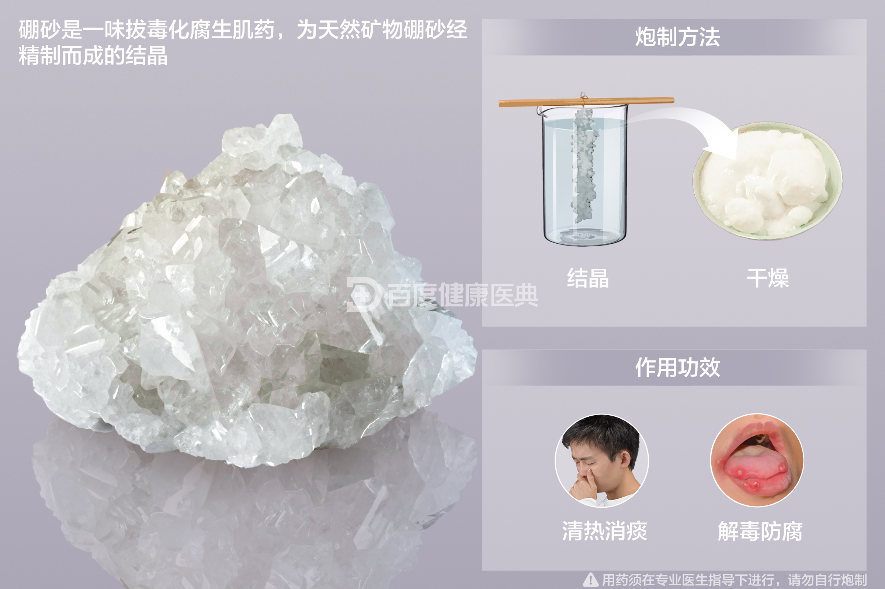
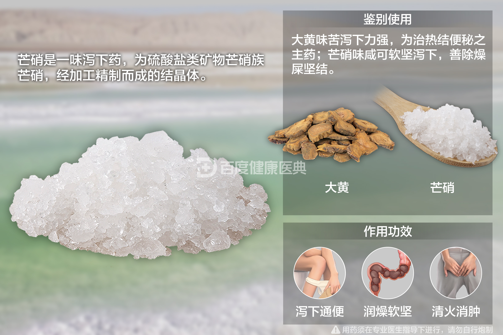

何首乌 (Polygonum multiflorum)
用于滋补肝肾，具有黑发强筋的效果。
黄精 (Polygonatum)
用于补脾益肺，具有润肺止咳的功效。


菊花 (Chrysanthemum morifolium)
清肝明目，常用于治疗头痛、眼疾。


麦冬 (Ophiopogon japonicus)
养阴润肺，用于治疗阴虚咳嗽。
红参 (Panax ginseng)
与人参相似，但性质更温和，适合长期服用。
龙眼肉 (Longan arillus)
补心益脾，安神养血。
桔梗 (Platycodon grandiflorus)
利咽消炎，用于治疗咽喉肿痛。
防风 (Saposhnikovia divaricata)
祛风解表，用于治疗风寒感冒。

檀香 (Santalum album)
安神定魄，用于治疗心神不宁。
独活 (Angelica pubescens)
祛风湿，强筋骨。


肉桂 (Cinnamomum verum)
温中散寒，用于治疗脾胃虚寒。

酸枣仁 (Ziziphus jujuba)
安神助眠，用于治疗失眠多梦。
芡实 (Euryale ferox)
补脾止泻，用于治疗脾虚泄泻。
三七 (Panax notoginseng)
活血止血，用于治疗外伤出血。
龟甲 (Testudinis carapacis)
滋阴降火，用于治疗阴虚火旺。
柴胡 (Bupleurum chinense)
疏肝解郁，用于治疗肝气郁结。
茴香 (Foeniculum vulgare)
温中散寒，用于治疗脾胃虚寒。
肉苁蓉 (Cistanche deserticola)
补肾益精，用于治疗肾虚阳痿。

地榆 (Sanguisorba officinalis)
凉血止血，用于治疗血热出血。

蒲黄 (Typha orientalis)
止血利尿，用于治疗血尿。

酵母 (Saccharomyces cerevisiae)
帮助消化，用于治疗消化不良。
霜桑叶 (Morus alba)
清肺润燥，用于治疗肺热咳嗽。
巴豆霜 (Croton tiglium)
通便泻火，用于治疗大便秘结。
硼砂(Borax)
消毒防腐，用于治疗疮疡。
芒硝 (Glauber's salt)
通便泻火，用于治疗大便秘结。
玄明粉 (Gypsum)
清热泻火，用于治疗高热不退。